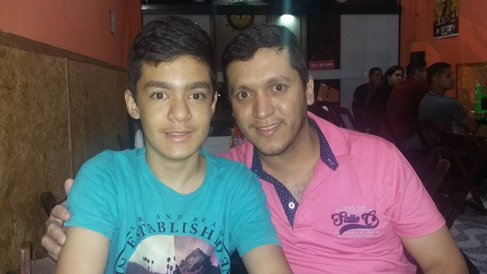
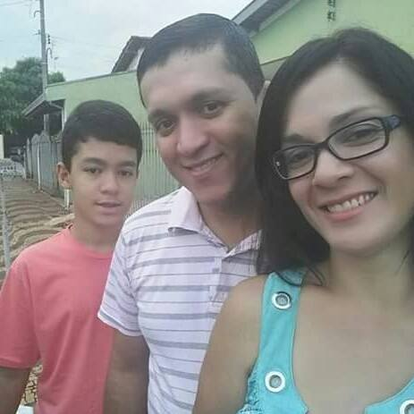
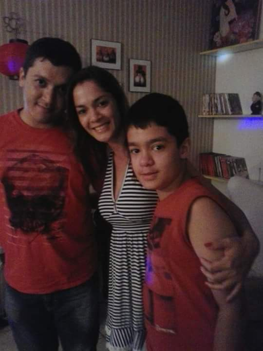
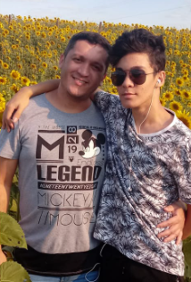

Feliz Dia dos País
Oi Pai, acho que já virou tradição uma cartinha em cada data especial, mas dessa vez eu resolvi fazer algo diferente. Essa é uma cartinha que não da pra pegar na mão, não da pra guardar ou amassar, mas ela vai durar para a eternidade, assim como meu amor por você.

Desde muito cedo na escolinha a gente é introduzido que nossos país são herois, invencíveis, indestrutíveis, mas com o tempo aprendemos que não é bem assim, vocês são humanos, erram e pedem desculpas.

Mas honestamente eu prefiro assim.
Eu aprendi muito com você pai, aprendi que sempre se protege a familia a todo custo, você sempre foi o meu forte, a casa sempre estaria segura com você nela, andar na rua mais escura nunca daria medo com você, nenhum animal entraria em casa até os cachorros estariam seguros caso engasgassem.

Você sempre foi meu sinonimo de segurança.
Mas esse foi só o começo de tudo que me ensinou, contigo eu aprendi que homens, sim, choram, que pedem desculpas, que erram. Contigo eu aprendi que a família vem antes de tudo, aprendi a ser carinhoso nas palavras.
A cada boa noite, talvez extenso demais, que talvez nem seja o primeiro da noite, você transparece amor e por isso eu agradeço muito. Agradeço por pequena dica antes da entrevista, por cada grama de preocupação, por cada pergunta atenciosa, que as vezes eu nem mesmo tenha algo pra responder. Agradeço por toda a minha vida.

Contigo eu aprendi o que é ser família
Mas por fim pai, eu tenho mais uma coisa, essa que eu gostaria de aprender contigo. A sua cumplicidade, estar disposto a ir, voltar, levar ou acompanhar a qualquer lugar, é algo que eu gostaria de herdar. É o maior simbolo de amor, é o significado de amor, fazer algo por alguém.
Por cada demonstração pai, por cada perguntinha, por cada sacrificio, que eu justifico a eternidade do meu amor por ti, a eternidade em cada memória, a eternidade em cada abraço

Eu te amo eternamente Pai!